Mes expériences des LAN Parties
Lan n° 3
LAN Party - Juillet 2024
Ma dernière LAN a été faite le 10 et 11 juillet 2024. Elle a été faite pour fêter l'obtention de notre baccalauréat avec les amis. Et ça a été la plus grosse LAN qu'on a faite moi et mes amis.
On a fait gros à celle ci, on l'a fait sur deux jours, et on a prévu plusieurs jeux, mais cette fois, on a prévu des activités extérieurs. Laissez moi vous raconter tout ça.
En premier voici l'organisation qui a été prévue par moi même, histoire d'avoir une idée de ce qu'il y a à faire: 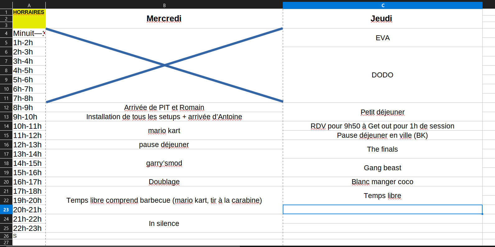
Comme d'hbaitude on attend les invités avec la table de prête, une fois qu'ils sont arrivés on installe tous les pc et écran etc.
Les jeux auxquels on a joués sont Garry' mod, In Silence, Gang Beast et Blanc manger coco
Explication des jeux
Garry's mod est un jeu sandbox qui offre une liberté totale aux joueurs pour créer, manipuler et expérimenter avec des objets, des personnages et des environnements en utilisant le moteur Source de Valve.
Pour faire simple c'est un jeu sur lequel il y a plusieurs mode de jeu comme : Murder, Hide and Seek, DeathRun.
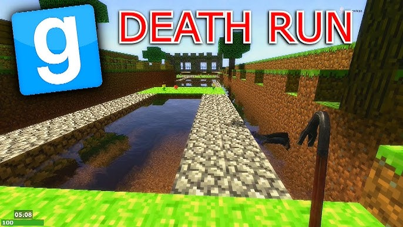 Nous avons joué au mode "DeathRun" traduit de l'anglais "Parcour de la mort", le but est le suivant : plusieurs joueurs qu'on appel les runners vont devoir traverser tout d'un parcour avec des pièges mortels. Il y a un autre joueur qui lui controle les pièges, il doit les activer au bon moment pour tuer les runners.
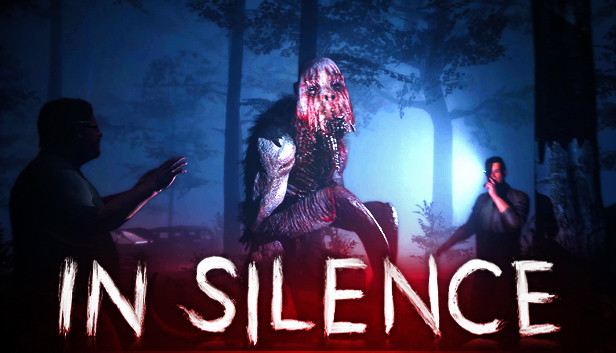 Ensuite il y a In Silence, est un jeu d’horreur multijoueur où les joueurs sont confrontés à une créature redoutable appelée le Rake. L’un des joueurs incarne ce monstre aveugle mais doté d'une ouïe extrêmement fine, tandis que les autres jouent des survivants qui doivent coopérer pour échapper au Rake en se déplaçant discrètement et en trouvant un moyen de s’enfuir. Chaque bruit peut trahir leur position, rendant chaque mouvement périlleux.
Nous avons décidé de jouer à un jeu d'horreur le soir afin de rendre notre soirée frissonnante.
Gang Beast est un jeu de combat multijoueur hilarant et chaotique dans lequel des personnages aux physiques gélatineux s’affrontent dans de petites cartes (arène). Les combats se déroulent dans des environnements variés et remplis de pièges, comme des toits d’immeubles, des camions en mouvement ou des usines avec des machines dangereuses. 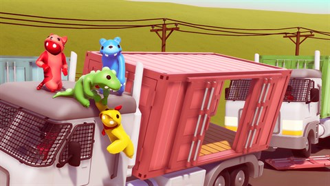
Blanc manger coco est un jeu de société d'ambiance destiné aux adultes, conçu pour animer les soirées entre amis. Le principe est simple : chaque joueur doit compléter des phrases à trous en utilisant des cartes réponses, dans le but de créer la combinaison la plus drôle ou décalée. 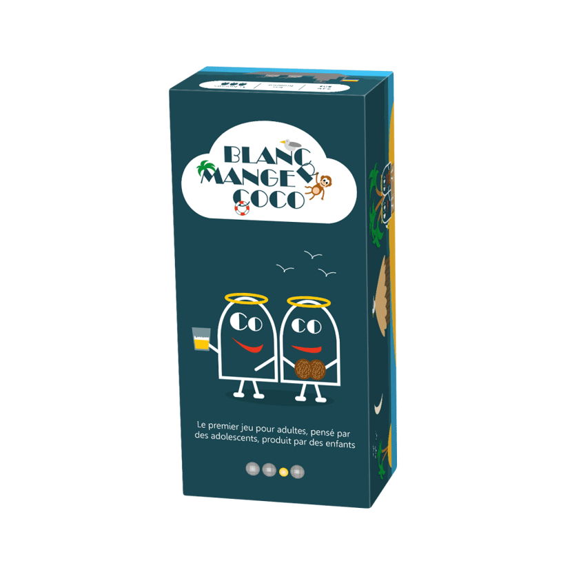
Équipements
Durant cette LAN nous avons préparé un setup digne de geek. C'est-à-dire que moi, l'organisateur, j'avais 3 pc à ma disposition. Un pour jouer aux jeux, un autre pour gérer la musique qui sortait sur les enceintes pour donner de l'ambiance à la LAN, et un troisième pc pour gérer le son de tout le monde. Je m'explique, pour faire des souvenirs, on a tout filmé, et donc tout le monde avait un micro, sur ce troisième pc je gérais avec une table de mixage Virtuelle le son des micros de tout le monde.
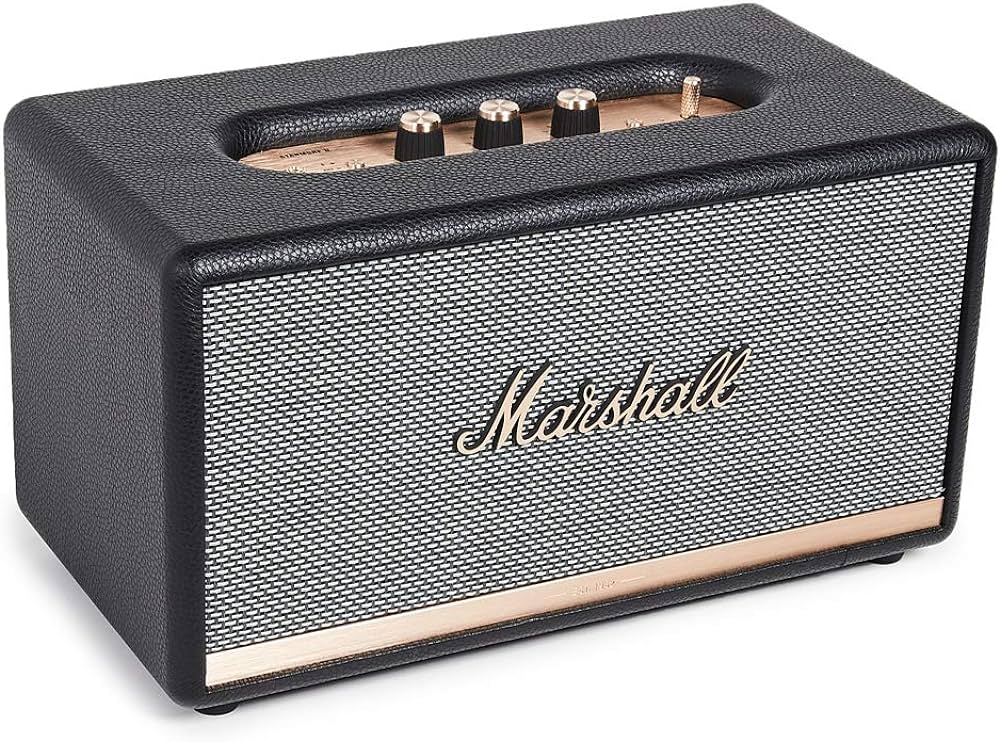Nous avions deux enceintes de Marshall pour profiter plainement de la musique.
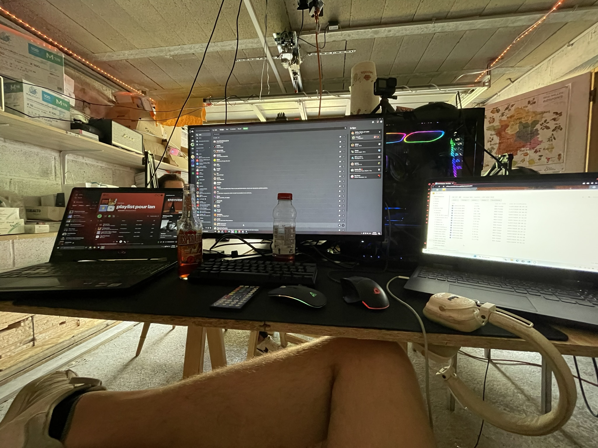Ici c'était ma place, le "maître de LAN", celui qui gérait le tout, avec les trois pc dont je parlais plus haut.
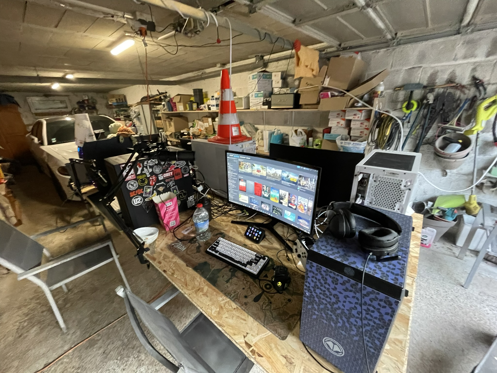L'ensemble de la table (ne posez pas de question sur le cône de chantier).

La pause déjeuner c'était pizza 🍕!
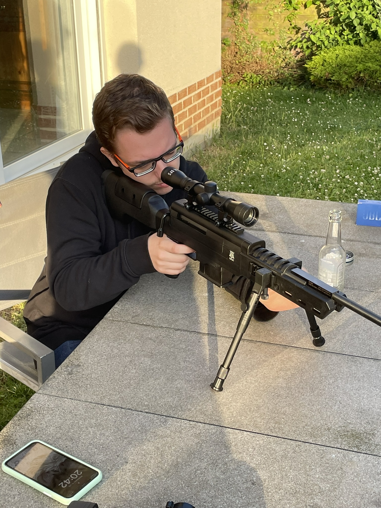Je sais, vous vous demandiez ce qu'est le "tir à la carabine". Je vais vous expliquer le tout. Tout à bord, la carabine que vous voyez en photo c'est une carabine qui nécéssite aucun permis, et ça n'est pas du plomb dedans ! Lorsque nous avons fait cette activité, elle a été entourée par des adultes.
Ici nous tirions simplement sur des cannettes vides ou une pastèque pourrie. Pour plus de sécurité, à l'arrière des objets sur lesquels nous tirions, nous avions mis une plaque en métal épaisse de sorte à ce que les balles n'allent pas plus loin.
Activités extérieur
Comme première activité externe à notre lan nous sommes allés de 1h à 5h du matin à EVA.
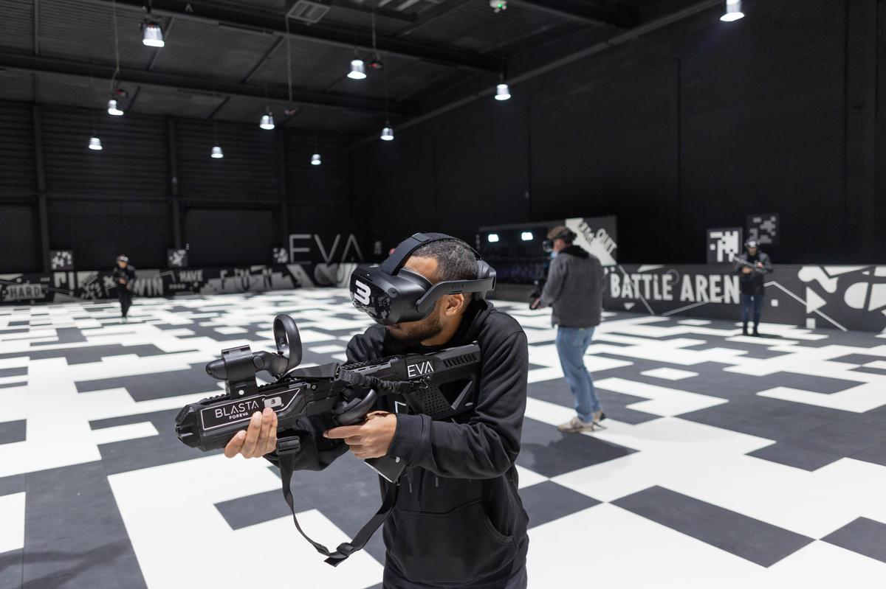Le principe d'EVA est un concept innovant de divertissement mêlant réalité virtuelle (VR) et e-sport. Les joueurs, équipés de casques VR et d'armes connectées, évoluent librement dans des arènes de 500 m², offrant une immersion totale dans des univers futuristes.
Si vous êtes intéressé je vous mets le site ici : Site d'EVA
Et comme dernière activité nous avons fait un escape game, ce fut une première pour nous tous. Nous l'avons fait à "Get out" à Amiens. Nous avons malheureusement échoué...
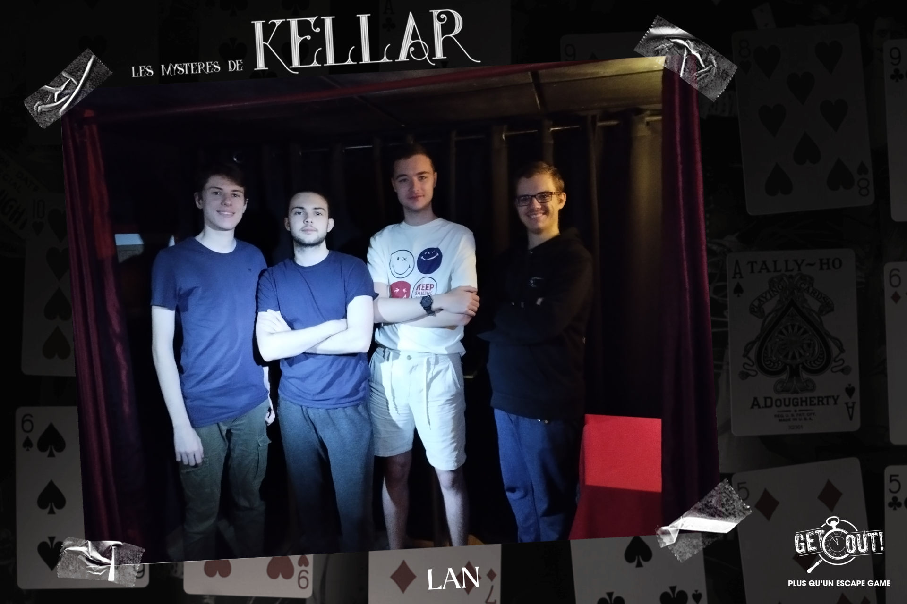